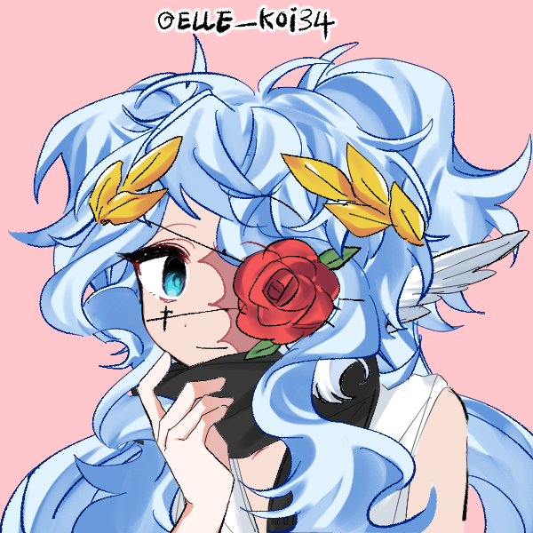

Supporting Cast · Archive File
Astra Caelum
Demon–Star Hybrid
“Where Virtue and Sin collide, a forbidden star is born.”

Basic Information
6.2 Million Years
SpeciesDemon–Star Hybrid
GenderFemale
OrientationBisexual
OriginStar Village
Known ForBeing Zerachiels third hand in combat and leading the Star Army
Overview
Astra is a Demon–Star hybrid born from the forbidden union of George Caelum, a Star, and Pandora Anesidora, a Demon. Her existence was considered taboo, as she embodies two opposing worlds: Virtue and Sin.
History
Very little is known about Astra’s early life. What is known is that she once rescued her sister Mephista from Hell after Mephista chose to run away from home. Astra helped her reach Heaven, where Mephista would later study under Zerachiel.
Astra herself was also one of Zerachiel’s greatest students, becoming one of the first Stars to be trained by him in the pursuit of worthiness. Later helping to lead the Star Army, Astra has become a key figure in the ongoing conflict between Heaven and Hell.
Abilities & Feats
Appearance
- Long light-blue hair
- Light-blue eye, other covered by rose
- Nearly pale skin
- Tall & slim, yet strong build
- Lighter Blue color due to experience
Personality
Astra is calm, calculating, and difficult to read. Her rare heritage, her past, and her training under Zerachiel make her fighting style highly unpredictable. Many who have faced her in combat have been caught off guard by her ability to adapt. Some even question why she would help Zerachiel, as often it was seen that he would not have her best interests in mind, however, Astra simply wanted to lead the Star Army and protect the Stars, even if it meant working with someone like Zerachiel. Even with his controversial background and methods, she still formed a deep respect for him, as he was one of the few who treated her as an equal and not a monster.